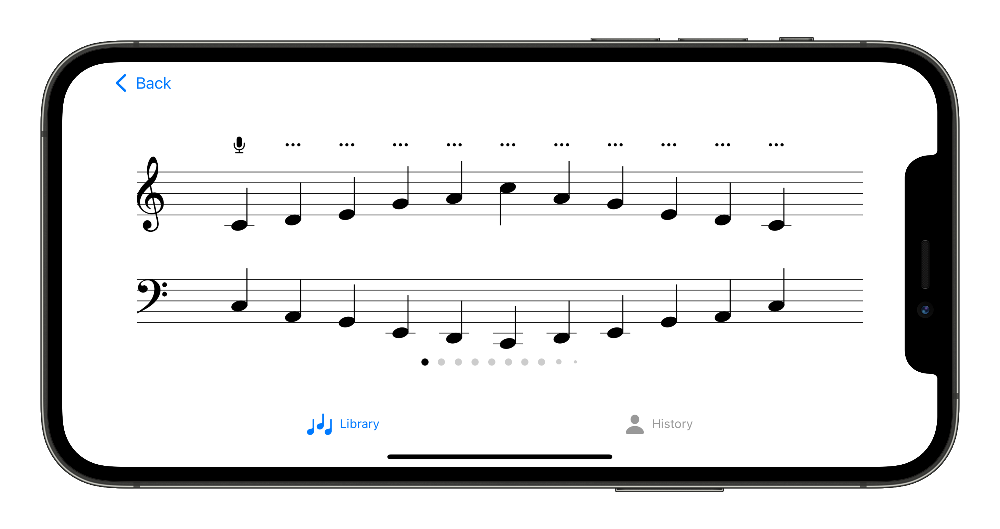

JAN 2024 — PRESENT
Senior Data Scientist
Budget Thuis · Amsterdam
DATA SCIENTIST · RESEARCHER · DEVELOPER
I’m Christian. I connect data, research and software to make complex problems understandable—and useful solutions possible.
Explore my experience ↓My work brings together data science, software engineering and business research. I enjoy moving between the details of a model and the bigger question: what can we do with what we learn?
My background spans industrial engineering, a research master and a PhD at the University of Groningen. My research examines how retailers’ decisions shape what people buy—and what they return.
Beyond the screen, you’ll find me playing piano, taking photographs, cooking or around a board game.
Budget Thuis · Amsterdam
NAVARA · Driebergen-Rijsenburg
Consulting on data science projects. Assignment at Triodos Bank from June to July 2023.
Sogeti · Vianen
Data science and software engineering, including an assignment at Sdu from February 2022 to January 2023 focused on search functionality using Python, Flask, Transformers and formal grammars.
Self-employed · Groningen
Native iOS development in Swift, including a custom sheet-music interface and real-time chord recognition using Python and TensorFlow/Keras.
University of Groningen
Research on how retailers’ choices affect customers’ order and return behaviour, including large-scale data analysis, academic collaboration, conference presentations and teaching.
SEP 2016 — JUL 2017 · Research Assistant · University of Groningen
DEC 2014 — MAY 2015 · Marketing Intern · Axel Springer SE
APR 2014 — JUL 2014 · Product Management Intern · solute GmbH
AUG 2011 — OCT 2011 · Intern, International Network Department · Groupe AFNOR
EDUCATION
University of Groningen · Product returns in omni-channel retailing
University of Groningen · Cum laude
Karlsruhe Institute of Technology
Research into retail decisions, customer behaviour and information retrieval.
A piano practice companion that listens. Real-time note and chord recognition lets the music guide the exercise, with no need to touch the screen.
Built with Swift and SwiftUI, with machine learning developed in Python and TensorFlow/Keras.
View on the App Store ↗